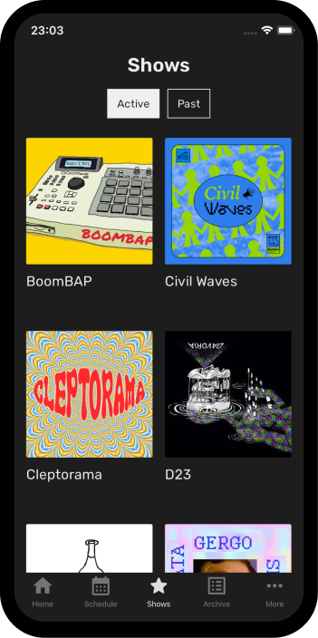

Tilos Radio

Tilos Radio is a unique and independent radio station based in Budapest, Hungary, known for its progressive voice and community-oriented approach. Since its inception in the early 1990s, Tilos has championed freedom of speech, diversity of opinion, and artistic experimentation, making it a prominent alternative to mainstream media in the region. Originally broadcasting illegally as a pirate station, Tilos—meaning “forbidden” in Hungarian—has since evolved into a legal and widely respected platform for underground music, social commentary, and grassroots activism.
What sets Tilos Radio apart is its dedication to non-commercial broadcasting and its open-door policy that welcomes volunteers, activists, and creatives from all walks of life. Its programming is as diverse as its audience, covering everything from electronic and world music to political debates, environmental issues, LGBTQ+ rights, and minority cultures. By giving voice to underrepresented communities and fostering dialogue on critical social topics, Tilos has become a cultural hub and an essential space for independent thought.
Tilos Radio continues to thrive thanks to its passionate community of contributors and supporters who keep the station running through donations, volunteer work, and a shared belief in media freedom. Its influence extends beyond Hungary, as it frequently collaborates with other independent media outlets and cultural initiatives across Europe. As a symbol of resistance and creativity, Tilos remains a vital part of Budapest’s cultural landscape, proving that radio can still be a powerful tool for connection, expression, and change.